Real stories and practical advice from years of living tiny
Living in a tiny house requires ingenuity and strategic design to make the most of every square inch. Whether you're a longtime tiny house resident or just...
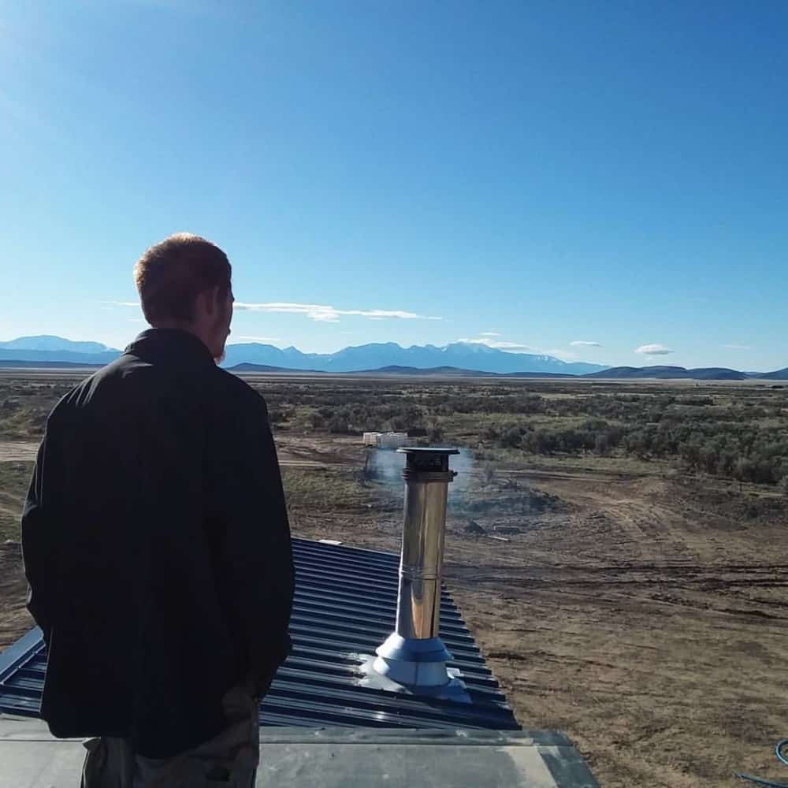
This is the most asked question my husband and I get; we have been living tiny for 7 years now and have lived all throughout the United States. Let's delve...
The tiny house movement has taken the world by storm, appealing to individuals seeking a simpler, more sustainable, and financially mindful lifestyle....
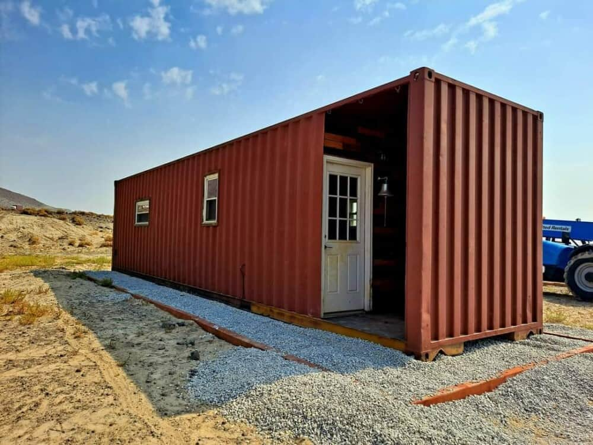
In a world where bigger often seems better, a growing trend is challenging the traditional notion of homeownership - the rise of tiny homes. These pint-sized...
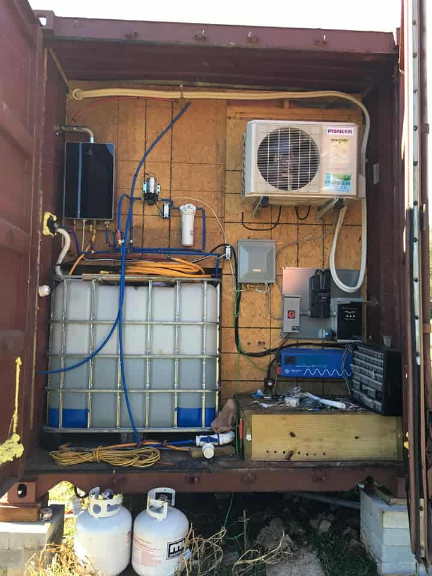
As tiny houses grow in popularity a lot of things have begun to change. Tiny houses used to be seen as a cheap way to live or study mobile living. However, now...
Putting a tiny house on your property comes down to two big questions: Location and the existence of a main dwelling already on the property.
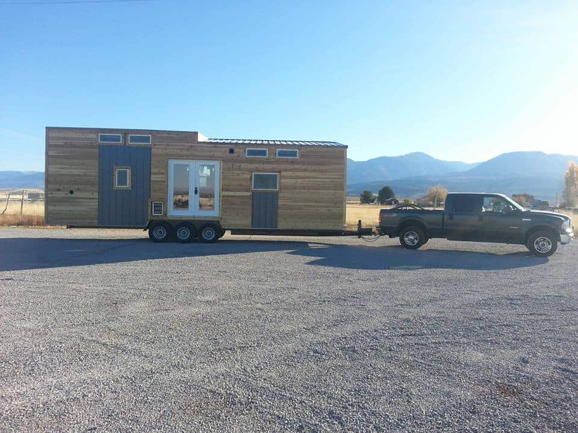
As tiny houses rise in popularity so do questions and concerns about them. Here I am going to tackle everything you need to know about moving your tiny house.
My husband and I have been living tiny for almost 4 years now, the entire time living off-grid. We have built and lived in 3 different types of tiny homes, and...
People often wonder what it's like living in a tiny house. What are the differences in daily tasks and how does it feel? My goal is to help as many people as...
People often ask if living tiny really saves money. To be honest it completely depends on the person and their lifestyle. Living tiny is a great option for the...
One of the biggest aspects of going tiny is downsizing. Many people do not know what they need and what to get rid of. I hope to help people understand what to...
My husband and I have been living tiny for almost four years now! We love it and we want to share our knowledge and experiences with others. One daunting...
Since the tiny house interest has been steadily increasing, people often wonder what it's like to live in a tiny house. How do they feel? How big are they?...
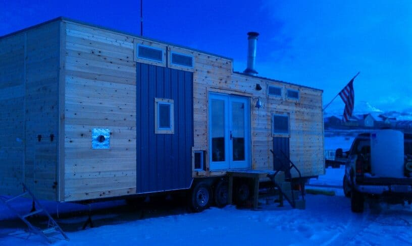
My husband and I have been living tiny for almost 4 years now. We have had a lot of people ask us for tips and how they can go tiny as well. So I wanted to...
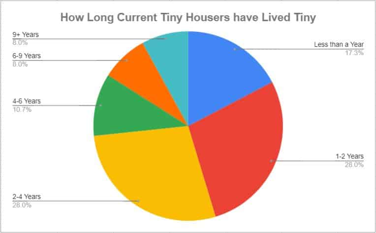
The tiny house trend has been popular for about 5 years now. And there are still lots of questions, for example; How long do families actually live in tiny...
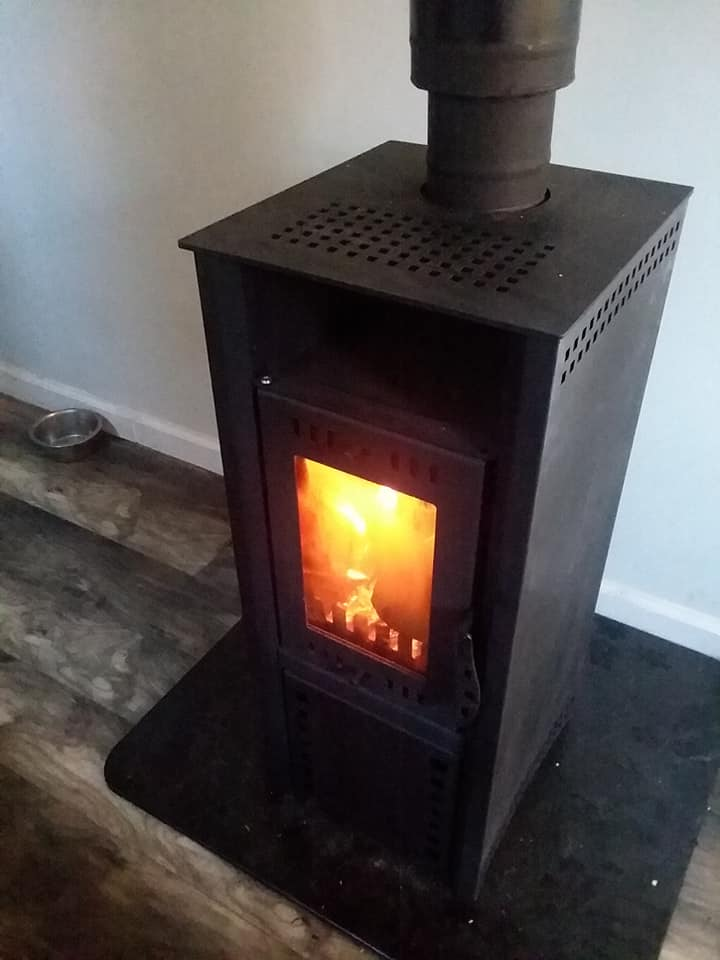
Heating a tiny house may prove to be more involved than it sounds. With so many options it can be difficult to determine which option is best for you.
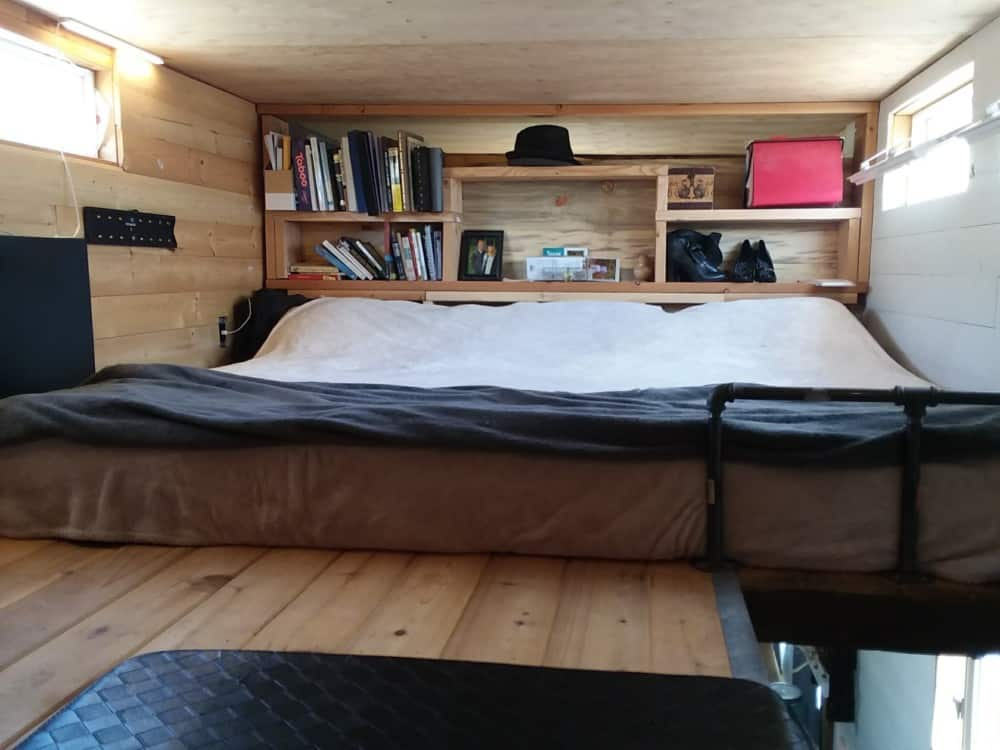
One concern people have about going tiny is the romantic times they can have with their significant other, especially if they have children. This can be a...
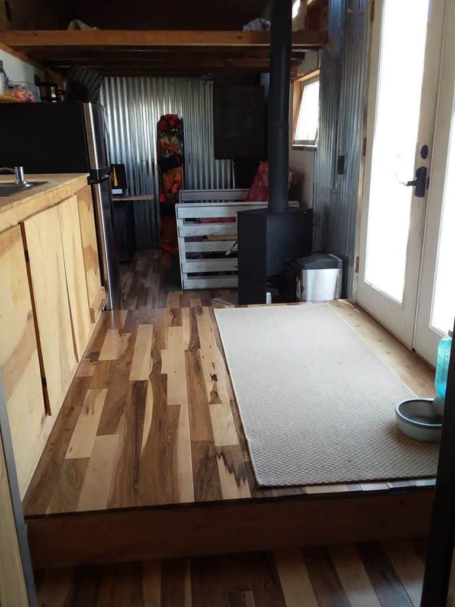
Often we are questioned on tips for accommodating guests in a tiny house, so I wanted to put a list together for everyone. This can seem daunting with a small...
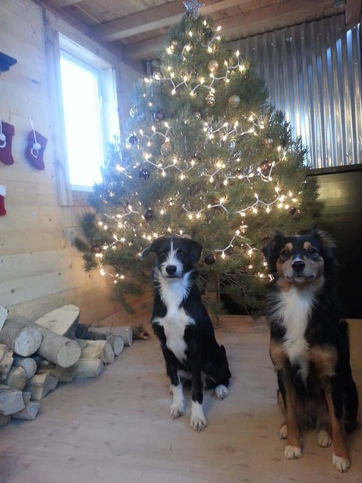
Many people have wondered how to live in a tiny house especially when the holidays come around. My husband and I have been living tiny for four years now and I...
As tiny house popularity grows many questions come up about the size of tiny houses. Of course, tiny houses on foundations have a lot more freedom, but what...
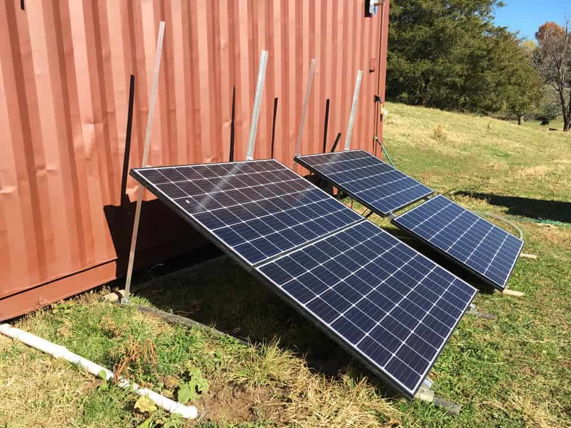
Since tiny houses have taken off in popularity, many people have lots of questions about how they are set up and run. Let's dig more into powering your tiny...
Let's talk about everything you need in a tiny house. Building or buying a tiny house can seem daunting if you do not understand how it works. This post is for...
A popular question is what it is like to live in a tiny house, years later. Let's look more into the durability and living quality of tiny houses.
People often ask me if tiny houses can have holding tanks. I would like to give more information on this, based on the homes we have built and some research I...
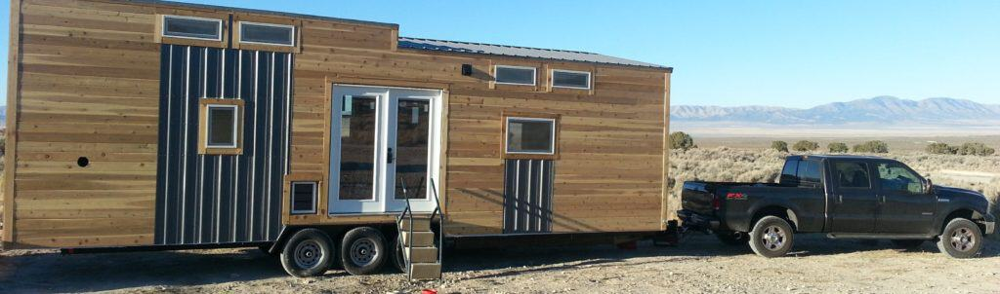
Titling and registering your tiny house on wheels (THOW) can be complicated. It varies by each state so please check your local state requirements, but here's...
Many people have asked me where we actually live in our tiny house or about having a living room. So I wanted to give everyone more information about how you...
One popular question that we get a lot is how our toilet works in a tiny house. There are a few different options for toilets in tiny houses, let's look at...
One thing many people ask is how big of a bathroom you can put in a tiny house. My husband and I have been living tiny for several years now and I wanted to go...
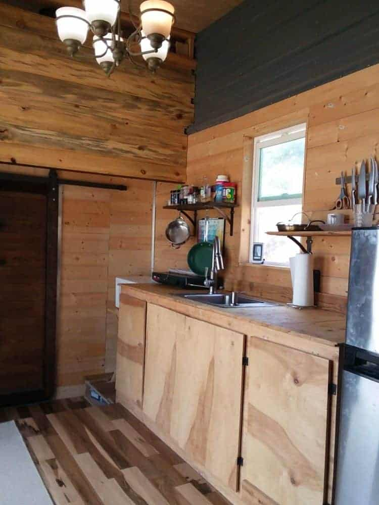
Many people have had concerns about their height in a tiny house on wheels (THOW), our homes have always felt spacious. So I wanted to cover this topic in more...
I have lived in several different states in our tiny houses and it is always interesting when it comes to getting an address.
The first tiny house my husband built had two bedrooms that were separated from the rest of the house. We did this for privacy and practical use.
There are still many unknowns when it comes to tiny houses. One question that many people ask is if they need a permit for their tiny house on wheels.
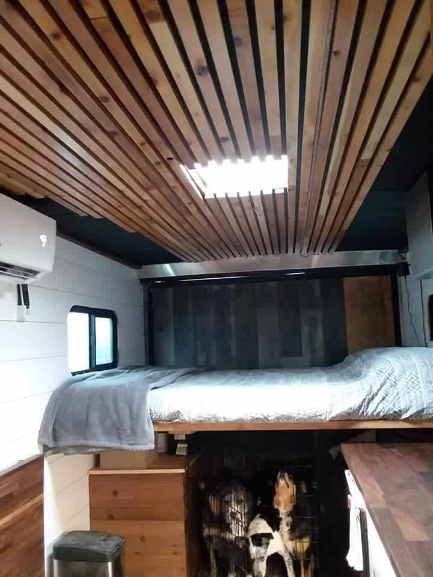
We have been slowly adding to our home. Walls are mostly up, besides some trim and shower walls, the ceiling is in progress. We've added some storage and a...
This is our personal story on how we went tiny and all of the homes we built.
As a tiny houser, I get this question a lot. One of the main reasons people can’t understand our lifestyle is because they have too many things to be able to...
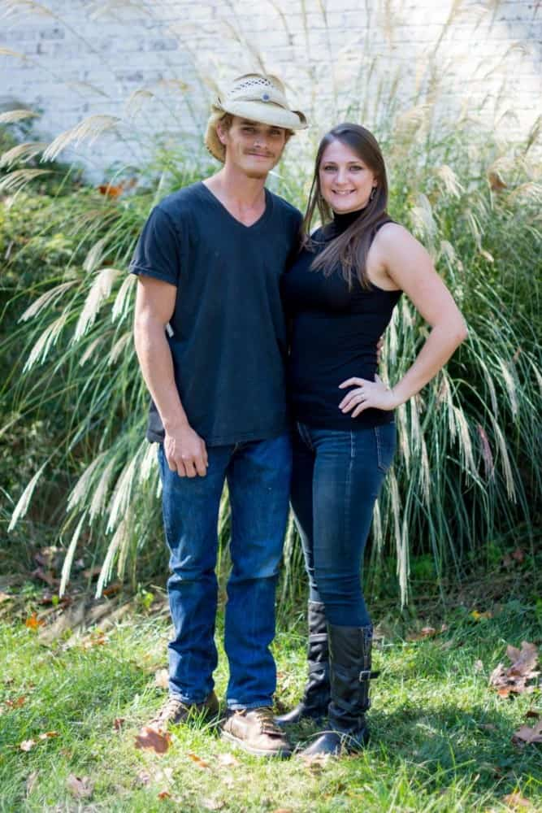
Have you ever wondered what the daily life of living tiny is actually like? When my husband and I tell people we live in a tiny home they always ask us what...